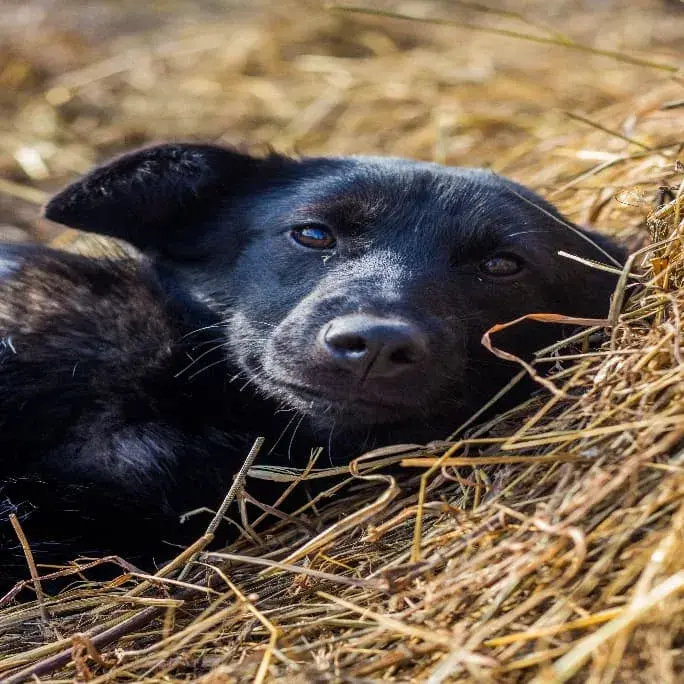
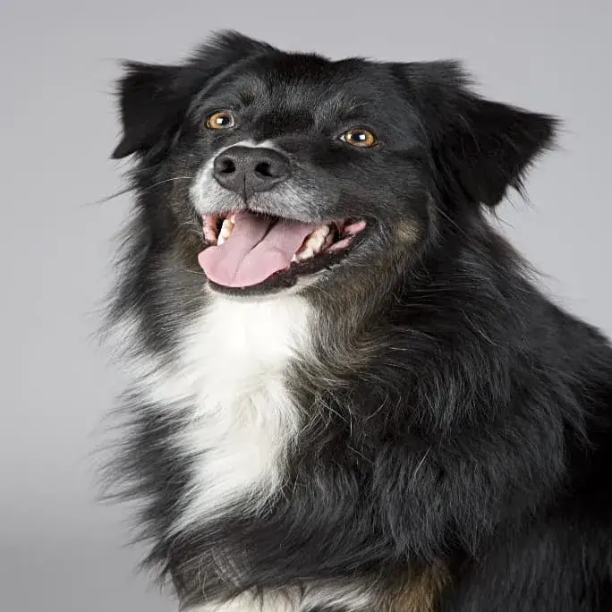
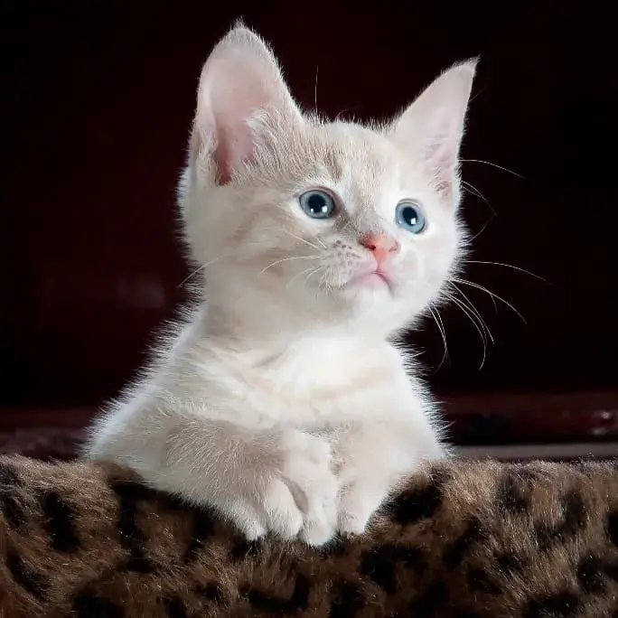
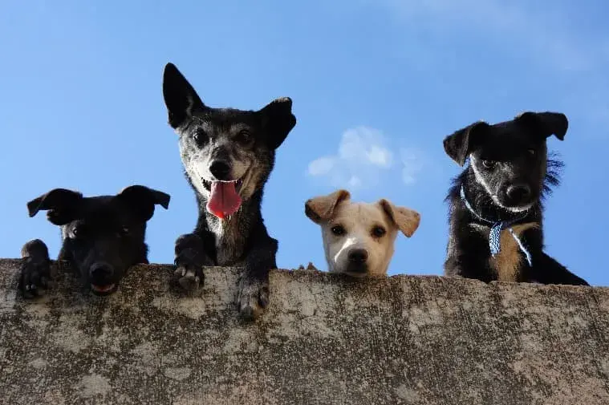

Feira de adoção com lindos pets para você chamar de seu!
Preencha a ficha de adoçãoAnimais disponíveis para adoção
Jabuticaba
Fêmea de 2 meses super brincalhona
Spike
Macho de 2 anos super inteligente
Malu
Fêmea de 3 meses muito carinhosa
O objetivo deste evento é fazer com que nossos focinhos carentes ganhem um lar.
Nossa feira de adoção contará com lindos animais castrados e vacinados que estão à espera de um lar.
Finais Felizes
Adriana Silva
Nossa vida mudou completamente depois que adotamos o Brutus. Agora posso dizer que a minha casa é repleta de amor e alegria com sua presença.
Mateus Delgado
Gostei do Pipoca desde a primeira vez que eu o vi. Hoje nós fazemos praticamente tudo juntos. Ele é o meu melhor amigo.
Arnaldo Senna
Com o falecimento de minha amada esposa, me senti muito triste e sozinho. Tudo mudou depois que conheci a Mimosa. Hoje, sua presença deixa meus dias mais felizes.
Larissa Almeida
Minha relação com o Minhau foi de amor à primeira vista. Ele é o amor da minha vida. Dizem que gato preto traz má sorte, mas azar mesmo é encontrar com seres humanos que pensam assim.
Adotar é um ato de amor
O curta-metragem abaixo nos mostra a importância da adoção, e a beleza desse amor incondicional de um cão por sua dona.
Local
Praça da Matriz
Bariri - SP
O evento será realizado na praça da matriz de nossa cidade, onde também será vendido diversos tipos de comidas e bebidas em favor de nossa entidade.


Contamos com a sua presença!
Preencha a ficha de adoção